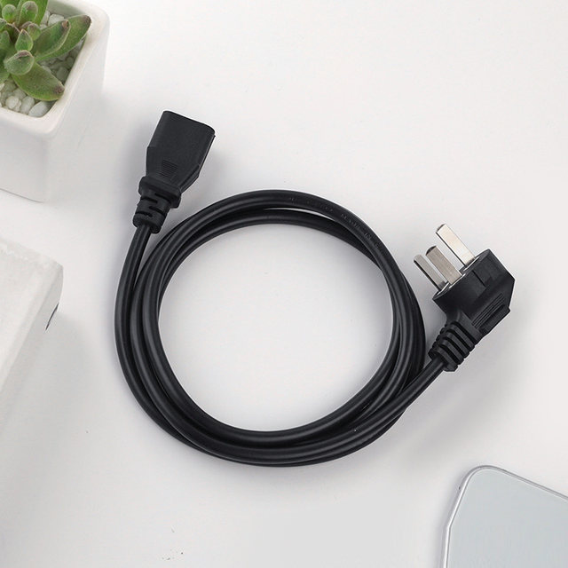
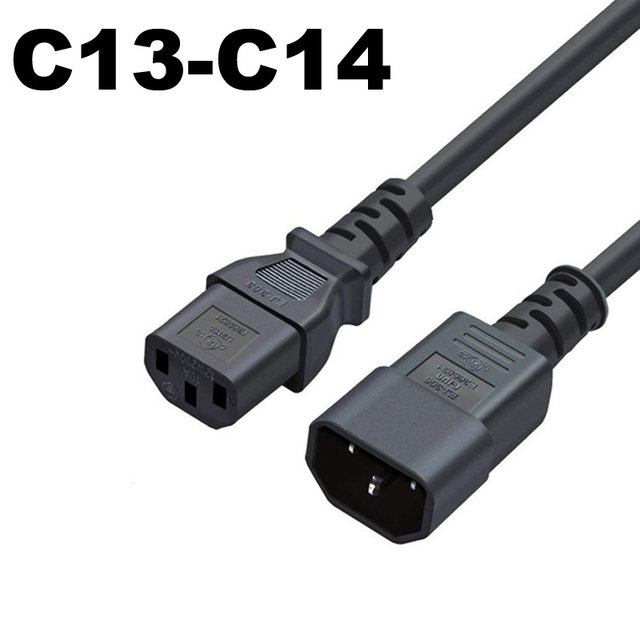
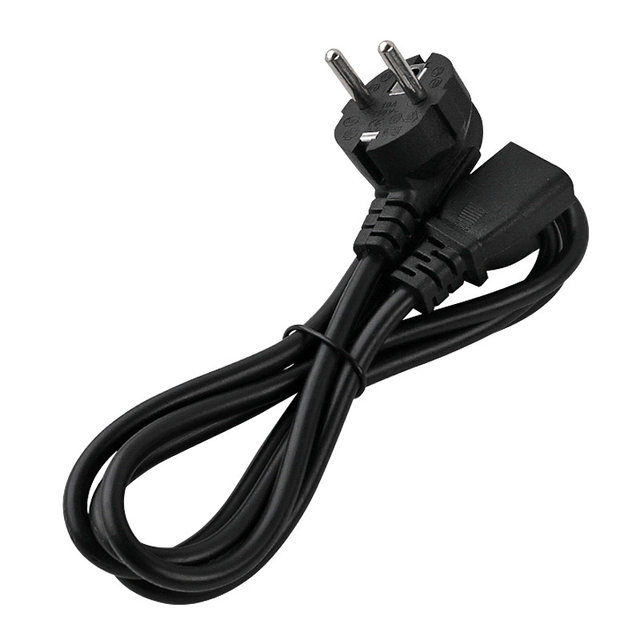
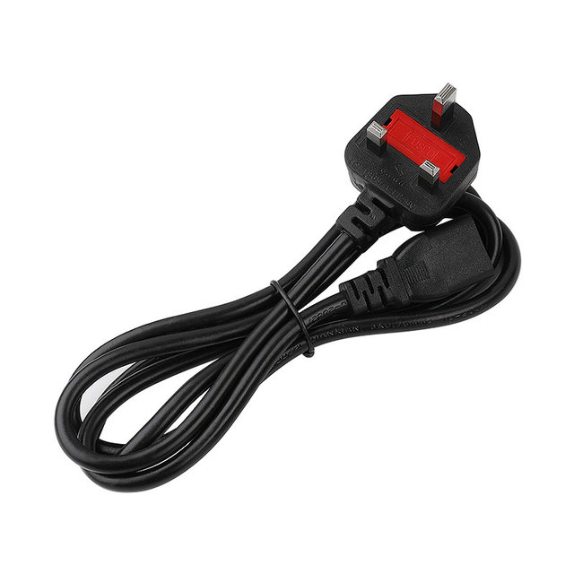
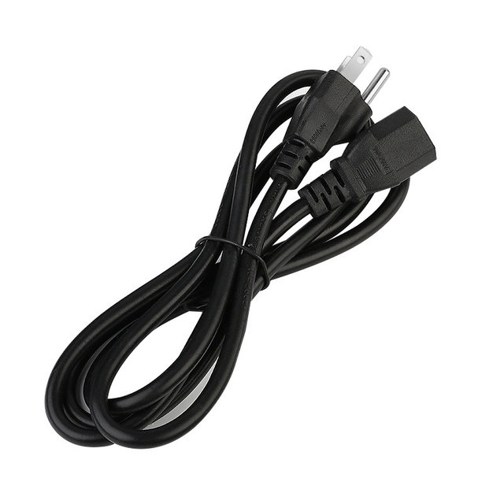

AC85V-265V 10A 1.5M/3M 3PIN EU Cord US UK AU Plug IEC C13 C13 TO C14 Extension Power Adapter Cable For Dell Desktop PC Monitor HP Epson Printer LG TV Projector Charger
100% brand new EU plug IEC C13 power cord cable
Wire gauge: 0.75 mm2 x 3
Rate voltage / current: 250V 10A
Conductor material: copper
Insulation material: PVC
Male end type: Schuko CEE 7/7 plug
Female end type: IEC-320-C13
Package included:
1xPower Cable




